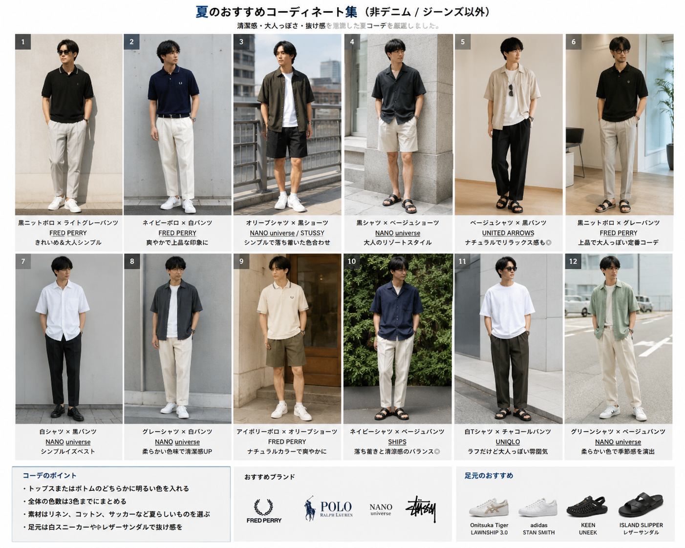

Fashion
夏服コーデ検討メモ：非デニムで清潔感のある夏コーデを探す
普段のジーンズ中心の夏服から少し変えるために、黒ポロ、オリーブシャツ、白スニーカー、 明るいパンツ、黒ショーツを軸に、非デニムの夏コーデを整理したメモ。
1. 今回の目的
普段はジーンズ、ポロシャツ、シャツ、半ズボンが多い。 ただ、夏服を少しアップデートしたい。 派手色や大きなロゴではなく、清潔感・大人っぽさ・抜け感を重視して、非デニム中心で検討した。
2. コーデ画像

3. 自分に合いそうな方向性
- 黒またはネイビーのポロシャツ
- 白、ライトグレー、オフホワイト、ベージュ系のパンツ
- くすみオリーブ、グレー、白系の半袖シャツ
- 黒ショーツ
- 白スニーカー
- 黒レザーサンダル
4. 避けたい方向性
- 鮮やかすぎる色
- 大きなロゴ
- いかにもストリートすぎるStüssy感
- 全身が黒く重い組み合わせ
- デニム頼りの夏服
5. 本命コーデ
A. 黒/ネイビー系ポロ × 明るいパンツ × 白スニーカー
黒またはネイビーのポロで上半身を締め、ライトグレー、オフホワイト、ベージュ系のパンツで夏らしく軽くする。 足元は白スニーカーにして、デニムに頼らず清潔感を出す方向。
近い購入候補・参考候補:
- FRED PERRY Rib Knitted Polo Shirt
- FRED PERRY Cotton Knitted Polo Shirt
- FRED PERRY The Fred Perry Shirt - M3600
- SHIPS ライト カラー テーパード チノ
- UNIQLO 感動パンツ メンズ
- Onitsuka Tiger LAWNSHIP 3.0
- adidas STAN SMITH
B. オリーブシャツ × 白T × 黒ショーツ × 白スニーカー
くすみオリーブの半袖シャツを羽織り、白Tと黒ショーツで軽くまとめる。 ストリート感を強くしすぎず、色数を絞って大人っぽく見せる方向。
近い購入候補・参考候補:
- NANO universe メンズシャツ一覧
- NANO universe ライトウェイトストレッチ ショートパンツ
- UNIQLO ショーツ メンズ
- Onitsuka Tiger LAWNSHIP 3.0
C. 白シャツ × 黒T × 明るいパンツ
白シャツと黒Tでコントラストを作り、パンツは明るい色にする。 全身黒に寄せず、白と明るいパンツで夏らしい抜けを残す方向。
近い購入候補・参考候補:
6. 買う優先順位
- 白スニーカー
- 黒またはネイビーのポロシャツ
- ライトグレー/オフホワイト/ベージュ系の長ズボン
- 黒ショーツ
- くすみオリーブ/グレー/白系の半袖シャツ
- 黒レザーサンダル
7. 注意書き
購入リンクは検討用メモです。 価格、在庫、カラー展開、販売ページは変更される可能性があります。 実際に購入する場合は、各公式サイト・販売元で最新情報を確認してください。